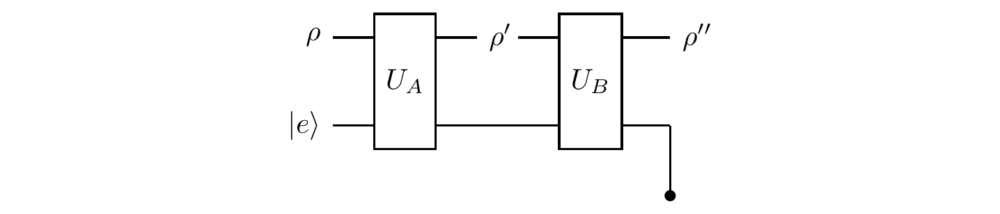
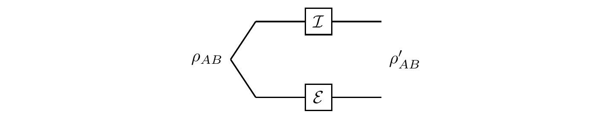
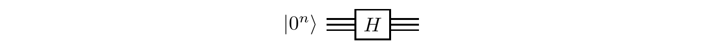
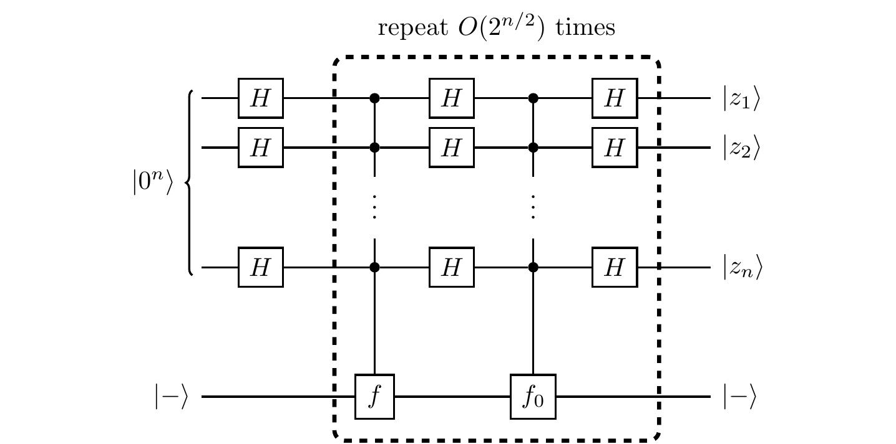
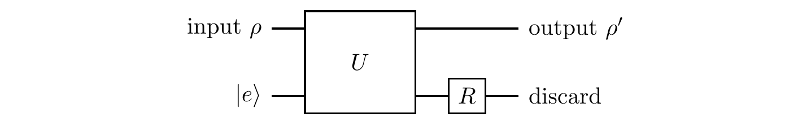
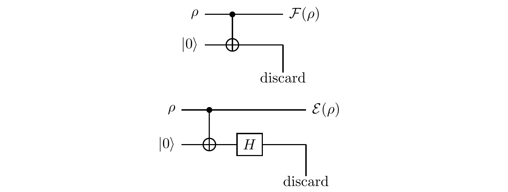
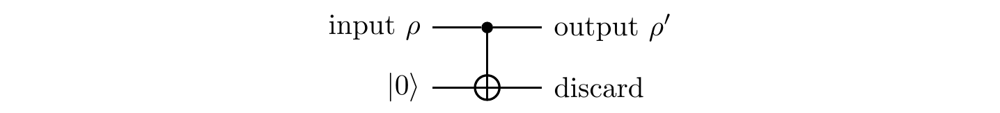

In quantum information science (and in life) we often divide the world into two parts: things we can control and everything else.
Things we can control (at least with some precision), such as a bunch of ions in an ion trap, will now acquire a generic name — the system — and the “everything else” part will be called the environment.
The joint evolution of the system and the environment is unitary, but the system alone may deviate from the unitary evolution due to the entangling interactions with the environment.
What does this non-unitary quantum evolution look like?
There are essentially two approaches to characterising quantum channels. Let us call them constructive and axiomatic.
In the end, you will be relieved to learn, the two approaches are equivalent, leading to the same mathematical formalism.
This equivalence is often goes by the name of the Stinespring dilation theorem, which says that the CPTP maps are exactly the maps which can be constructed from unitary evolutions by adding and removing subsystems.
The constructive approach
Unitary evolution is all there is…
Here we consider the constructive approach described above.
So we know that any evolution of any isolated system is always unitary, since, at the fundamental level, this is the only evolution that is offered by quantum theory.
Anything else that is not unitary has to be, somehow, derived from a unitary evolution of the whole, and it is easy to see that a unitary evolution of the whole does not imply unitary evolutions of its constituent parts.
The question is: what kind of sub-evolutions can be induced on subsystems by a global unitary evolution?
Consider a physical system, prepared in some input state |\psi\rangle\in\mathcal{H}, which is then combined with another system (here, the environment) that is initially in state |e\rangle\in\mathcal{H}_E.
The two systems interact, and their joint unitary evolution U produces, in general, an entangled state.
The system itself, after discarding the environment, ends in an output state \rho', which is given by taking a partial trace, as shown in Figure 10.1.
The requirement that the environment start in a pure state is not very restrictive: if it were initially in a mixed state, then we could always regard the environment as a sub-environment of some larger environment in an entangled pure state.
It is important, however, that the system and its environment initially have no correlation with each other: they are in a product state |\psi\rangle\otimes|e\rangle.
Then, if we fix the initial state of the environment |e\rangle and the unitary U, the final state of the system depends only on its initial state |\psi\rangle.
In fact, the initial state of the system can be a mixed state, described by some density operator \rho.
This is because any mixed state can be interpreted as a statistical mixture of pure states, and any linear process respects such a mixture.
Thus, by fixing U and |e\rangle, we have constructed a well defined linear map \mathcal{E}\colon\mathscr{B}(\mathcal{H})\to\mathscr{B}(\mathcal{H}) that transforms the input state \rho into the output state \rho'=\mathcal{E}(\rho).
\begin{aligned}
\mathcal{E}\colon \mathscr{B}(\mathcal{H}) &\longrightarrow \mathscr{B}(\mathcal{H})
\\\rho &\longmapsto \rho'=\operatorname{tr}_E \big(U|\psi\rangle\langle\psi|\otimes|e\rangle\langle e| U^\dagger\big)
\end{aligned}
This way of describing the action of a quantum channel is often called the unitary representation of a channel.
As mentioned above, the channel is completely defined by the unitary U and the initial state of the environment |e\rangle, but note that, once the system and the environment cease to interact, any operation on the environment alone has no effect on the state of the system.
That is, the two diagrams in Figure 10.2 define the same channel, or, in other words, the unitaries U and (\mathbf{1}\otimes R)U, where R acts only on \mathcal{H}_E, define the same channel.
Note that, for any operator \tilde{\rho} on \mathcal{H}\otimes\mathcal{H}_E, and for any operator R on \mathcal{H}_E, we have that
\operatorname{tr}_E\left[
(\mathbf{1}\otimes R) \tilde{\rho} (\mathbf{1}\otimes R^\dagger)
\right] = \operatorname{tr}_E \tilde{\rho}.
The reduced density operator \rho=\operatorname{tr}_E\tilde{\rho} is not affected by R.
We can easily prove this for operators \tilde{\rho} that are tensor products \tilde{\rho}=X\otimes Y (a good exercise to try yourself), and then, by linearity, extend the result to any operator \tilde{\rho}.
We must point out that our construction of quantum channels does not capture all possible quantum evolutions.
The assumption that the system and the environment are not initially correlated is crucial, and it does impose some restrictions on the applicability of our formalism.
Compare, for example, the following two versions of a process in which the system, initially in state \rho, undergoes two stages of evolution.
Firstly:

Here, the environment is not discarded after the first unitary evolution U_A — it carries on and participates in the second unitary evolution U_B.
In this case, the evolutions \rho\mapsto\rho' and \rho\mapsto\rho'' are well-defined quantum channels, but the evolution \rho'\mapsto\rho'' is not; it falls outside the remit of our formalism for the input state of the system and the state of the environment are not independent.
Secondly:

In contrast to the previous process, here we discard the environment after the first unitary, and start the second unitary evolution in a fresh tensor product state with a new environment — the two stages involve independent environments.
In this case, all three evolutions (\rho\mapsto\rho', \rho'\mapsto\rho'', and \rho\mapsto\rho'') are well-defined quantum channels, and can be composed.
If \mathcal{E}_A describes the evolution from \rho to \rho', and \mathcal{E}_B the evolution from \rho' to \rho'', then the composition \mathcal{E}_B\mathcal{E}_A describes the evolution from \rho to \rho''.
In practice, we often deal with complex environments that have internal dynamics that “hide” any entanglement with the system as quickly as it arises.
For example, let our system be an atom, surrounded by electromagnetic field (which serves as the environment), and let the field start in the vacuum state.
If the atom emits a photon into the environment, then the photon quickly propagates away, and the immediate vicinity of the atom appears to be empty, i.e. it resets to the vacuum state.
In this approximation, we assume that the environment quickly forgets about its state resulting from any previous evolution.
This is known as the Markov approximation, and, in the quantum Markov process, the environment has essentially no memory.
Operator sum representation
The unitary representation of a quantum channel is usually too general to be of any practical use, at least for our purposes.
We will find it convenient, as you will see when we start discussing quantum error correction, to choose an orthonormal basis \{|e_k\rangle\} of \mathcal{H}_E, and express the joint (i.e. “system plus environment”) unitary evolution U as
U(|\psi\rangle\otimes|e\rangle)
= \sum_k E_k|\psi\rangle\otimes|e_k\rangle
where E_k is an operator on \mathcal{H} defined by
E_k|\psi\rangle
= \langle e_k|U(|\psi\rangle\otimes|e\rangle)
for any vector |\psi\rangle\in\mathcal{H}
Think about \langle e_k|U(|\psi\rangle\otimes|e\rangle) as a “partial inner product” of |e_k\rangle\in\mathcal{H}_E and U|\psi\rangle|e\rangle\in \mathcal{H}\otimes\mathcal{H}_E.
In analogy with classical communication channels we sometimes refer to the operators E_k as quantum errors.
The intuition behind the expression
|\psi\rangle\otimes|e\rangle
\longmapsto \sum_k E_k|\psi\rangle\otimes|e_k\rangle
is that the operation E_k (which changes the state of the system as |\psi\rangle\mapsto E_k|\psi\rangle) occurs with the probability p_k=\langle\psi|E^\dagger_k E_k|\psi\rangle.
The probabilities sum up to one, i.e. \sum_k p_k=\langle\psi|E^\dagger_k E_k|\psi\rangle =1 for any state |\psi\rangle, and so the operators E_k must satisfy the completeness relation
\sum_k E^\dagger_k E_k=\mathbf{1}.
Note that the matrix U acts on the tensor product space, which gives it a natural partition into blocks of sub-matrices, such as E_k=\langle e_k|U|e\rangle.
In order to visualise E_k=\langle e_k|U|e\rangle, write U as a matrix on \mathcal{H}_E\otimes\mathcal{H} rather than \mathcal{H}\otimes\mathcal{H}_E (i.e. place the environment first and the system second).
Then, in a tensor product basis in which |e\rangle\equiv|e_1\rangle, the (d\times d) matrices E_k form the first block column:
U=
\left[
\,
\begin{array}{c|c|c}
E_1
& \cdots
& \cdot
\\\hline
E_2
& \cdots
& \cdot
\\\hline
\vdots
& \ddots
& \vdots
\\\hline
E_n
& \cdots
& \cdot
\end{array}
\,
\right].
The remaining entries of U are irrelevant for the purpose of describing our sub-dynamics, since we have fixed the initial state of the environment.
If we had chosen |e\rangle\equiv|e_2\rangle instead, then we would have been looking at the matrices in the second block column, and all other entries would be irrelevant.
You see the pattern, right?
Here, the k in E_k ranges from 1 to some n\leqslant D, if we discount zero matrices.
Finally, to be clear, reversing the order of the system and the environment does not affect the physical description as long as we remember which part is which.
We changed the order just for pedagogical purposes; you can stick to the original order if you wish, but then the entries of E_k will be dispersed all over the matrix U.
Now, if we express the system-plus-environment evolution in terms of density operators
|\psi\rangle\langle\psi|\otimes|e\rangle\langle e|
\longmapsto \sum_{k,l} E_k|\psi\rangle\langle\psi| E^\dagger_l\otimes|e_k\rangle\langle e_l|
and trace over the environment, then we can write the evolution of the system alone as
|\psi\rangle\langle\psi|
\longmapsto \sum_k E_k|\psi\rangle\langle\psi| E^\dagger_k.
Recall that any density operator can be represented as a statistical mixture of pure states, and so:
The above equation can be generalised and written as
\rho\longrightarrow \sum_k E_k\rho E^\dagger_k
where \rho is any state of the system, pure or mixed.
It turns out that all quantum channels can be represented in this way, which is known as the operator sum representation, or the Kraus representation.
The operators E_k are often referred to as the Kraus operators.
The operator sum (Kraus) representation follows from the unitary representation once we choose an orthonormal basis in \mathcal{H}_E.
Conversely, given an operator sum representation E_k\in\mathscr{B}(\mathcal{H}) of the channel \mathcal{E}, we can always view it as an operation resulting from a unitary map acting on some extended system: we just introduce an auxiliary system, the environment, which has dimension equal to the number of Kraus operators, and then choose an orthonormal basis |e_k\rangle.
We then define U via U|\psi\rangle|e\rangle\mapsto\sum_k E_k|\psi\rangle|e_k\rangle.
It is convenient to choose |e\rangle\equiv|e_1\rangle; in this case the operators E_k form the first block column of U.
All other entries can be chosen as you please (as long as U remains unitary).
By now it should be clear that an operator sum representation of a given quantum channel is not unique: once we fix U and |e\rangle, and hence define a quantum channel, we may still choose the basis vectors |e_k\rangle in \mathcal{H}_E as we please.
This means that the Kraus operators E_k=\langle e_k|U|e\rangle and F_k=\langle f_k|U|e\rangle, where \{|e_k\rangle\} and \{|f_k\rangle\} are two orthonormal bases, describe the same quantum channel.
They are unitarily related:
\begin{aligned}
F_k
&=\langle f_k| U|e\rangle
\\&=\sum_l\langle f_k|e_l\rangle\langle e_l|U|e\rangle
\\&=\sum_l \langle f_k|e_l\rangle E_l
\\&=\sum_l R_{kl} E_l
\end{aligned}
where R_{kl}=\langle f_k |e_l\rangle is a unitary matrix, and we have used the decomposition of the identity \sum_l|e_l\rangle\langle e_l|=\mathbf{1}_E.
In fact, the converse holds true as well:
Suppose that E_1,\ldots,E_n and F_1,\ldots,F_m are Kraus operators associated to the quantum channels \mathcal{E} and \mathcal{F}, respectively.
Let us append zero operators to the shorter list to ensure that n=m.
Then \mathcal{E} and \mathcal{F} describe the same channel if and only if F_k=\sum_l R_{kl} E_l for some unitary R.
It is easy to see the reverse implication:
\begin{aligned}
\mathcal{F}(\rho)
&=\sum_k F_k\rho F^\dagger_k
\\&= \sum_{ijk} R_{ki}E_i \rho E^\dagger_j R^\star_{jk}
\\&=\sum_{ij} \underbrace{\left(\sum_k R_{jk}^\star R_{ki}\right)}_{\delta_{ij}} E_i\rho E^\dagger_j
\\&= \sum_j E_j\rho E^\dagger_j
\\&= \mathcal{E} (\rho).
\end{aligned}
Without any restrictions on the operators E_k, any map of the form U\mapsto\sum_k E_k U E_k^\dagger preserves Hermiticity and positivity.
If we additionally require the completeness relation \sum_k E_k^\dagger E_k=\mathbf{1}, then the map becomes trace-preserving:
\begin{aligned}
\operatorname{tr}\mathcal{E}(\rho)
&= \operatorname{tr}\sum_k E_k\rho E_k^\dagger
\\&= \operatorname{tr}\left[\underbrace{\left(\sum_k E^\dagger_k E_k\right)}_{\mathbf{1}} \rho\right]
\\&= \operatorname{tr}\rho
\\&= 1.
\end{aligned}
Any unitary evolution of a density operator
\rho \longmapsto U\rho U^\dagger
is a trivial example of the operator sum representation, with just one Kraus operator U.
Next we may consider a probability distribution on a finite set of unitary operations U_1,\ldots, U_m.
In this scenario, U_k will be chosen at random according to the probability distribution p_1\ldots p_k \ldots p_m, and applied to \rho.
If this is all that is known about the procedure, then the resulting transformation of \rho can be written as
\begin{aligned}
\rho\longmapsto
&\sum_k p_k U_k\rho U_k^\dagger
\\=&\sum_k \underbrace{\sqrt{p_k} U_k}_{E_k} \rho \underbrace{U_k^\dagger\sqrt{p_k}}_{E_k^\dagger}
\\=&\sum_k E_k\rho E^\dagger_k.
\end{aligned}
In this case,
\rho\longmapsto \sum_k E_k\rho E_k^\dagger
where \sum_k E_k^\dagger E_k = \sum_k E_k E^\dagger_k =\mathbf{1}.
This is an example of a unital channel, i.e. one for which \sum_k E_k E^\dagger_k =\mathbf{1}; such a channel sends maximally mixed inputs to maximally mixed outputs (if \rho \propto \mathbf{1}, then so too is \rho').
In particular, if we restrict our attention to qubits, and choose the unitaries to be the identity and the three Pauli operators, then we construct what is known as a Pauli channel:
\rho
\longmapsto p_0 \mathbf{1}\rho\mathbf{1}+ p_x X\rho X + p_y Y\rho Y + p_z Z\rho Z.
The most popular Pauli channel is the depolarising channel
\rho
\longmapsto (1-p) \mathbf{1}\rho\mathbf{1}+ \frac{p}{3} (X\rho X + Y\rho Y + Z\rho Z).
In the depolarising channel, a qubit in state \rho remains intact with probability 1-p, or is otherwise transformed under one of the Pauli operators X, Y, or Z, each chosen randomly with probability p/3.
Useful exercise.
Show that the action of the depolarising channel is equivalent to the following operation: with probability p, the input state is thrown away and replaced with the maximally mixed state, and with probability (1-p) the input state survives without any disturbance.
Use the Bloch sphere picture and show that the depolarising channel uniformly contracts the sphere by the factor 1-\frac{4}{3}p.
Expand, evolve, and discard
We shall now discuss two important operations: adding and discarding subsystems.
You need to pay attention to the dimensions of the Hilbert spaces involved, for they are different.
Given a system \mathcal{A}, we can bring in another system \mathcal{B} to form the combined system \mathcal{AB}.
This will be described by a map (expansion)
\mathscr{B}(\mathcal{H}_{\mathcal{A}})
\longrightarrow \mathscr{B}(\mathcal{H}_{\mathcal{A}}\otimes\mathcal{H}_{\mathcal{B}}).
Conversely, given a composite system \mathcal{AB}, we can discard subsystem \mathcal{B}, which is described by a map (reduction)
\mathscr{B}(\mathcal{H}_{\mathcal{A}}\otimes\mathcal{H}_{\mathcal{B}})
\longrightarrow \mathscr{B}(\mathcal{H}_{\mathcal{A}}).
We will show now that the two operations can be written in the operator sum representation.
For consistency with the rest of the exposition, we will choose \mathcal{A} to be the system and \mathcal{B} the environment.
Expansion.
Any quantum system can be expanded by bringing in an auxiliary system (here, the environment) in a fixed state.
This is described by the isometric embedding
|\psi\rangle
\longmapsto |\psi\rangle\otimes|e\rangle
= (\mathbf{1}\otimes|e\rangle) |\psi\rangle.
It takes vectors in the Hilbert space associated with the original system, \mathcal{H} (where \dim\mathcal{H}=d) and tensors them with a fixed vector |e\rangle in the Hilbert space associated with the environment, \mathcal{H}_E (where \dim\mathcal{H}_E=d_E).
So it embeds the structure of \mathcal{H} into a larger Hilbert space \mathcal{H}\otimes\mathcal{H}_E (where \dim\mathcal{H}\otimes\mathcal{H}_{\mathcal{A}}=d\cdot d_E).
In terms of density operators, we write the expansion as
\begin{aligned}
\rho
\longmapsto &\rho\otimes|e\rangle\langle e|
\\=& (\mathbf{1}\otimes|e\rangle)\rho (\mathbf{1}\otimes\langle e|)
\\=& E\rho E^\dagger
\end{aligned}
where E=\mathbf{1}\otimes|e\rangle can be represented by a (d\times(d\cdot d_E)) matrix.
We note that E^\dagger E=\mathbf{1}\otimes\langle e|e\rangle=\mathbf{1} is the identity in \mathcal{H}.
Reduction.
We can also discard a part of a composed system.
If \rho\in\mathscr{B}(\mathcal{H}\otimes\mathcal{H}_E) is a joint state of the system and the environment (the two may be entangled), then we can neglect or discard the environment by tracing over it:
\begin{aligned}
\rho
&\longmapsto \operatorname{tr}_E\rho
\\=&\sum_k (\mathbf{1}\otimes\langle e_k|) \rho (\mathbf{1}\otimes|e_k\rangle)
\\=& \sum_k E_k \rho E^\dagger_k
\end{aligned}
where E_k=\mathbf{1}\otimes\langle e_k| and can be represented by a (d\cdot d_E)\times d matrices.
Again, we note that \sum_k E_k^\dagger E_k=\mathbf{1}\otimes\sum_k|e_k\rangle\langle e_k|=\mathbf{1}\otimes\mathbf{1}_E is the identity in \mathcal{H}\otimes\mathcal{H}_E.
So both expansion and reduction can be expressed in the operator sum representation as \rho\mapsto\sum_k E_k\rho E_k^\dagger, where \sum_k E_k^\dagger E_k=\mathbf{1}.
Here, the identity operator acts on the Hilbert space associated with the original density operator \rho, that is, \mathcal{H} for the expansion and \mathcal{H}\otimes\mathcal{H}_E for the reduction.
Note that we do not require that \sum_k E_k E^\dagger_k =\mathbf{1}.
The next thing to notice is that we can compose quantum channels.
This is straightforward in the operator sum representation: if
\begin{gathered}
\mathcal{E}_A\colon \rho
\longmapsto\sum_i A_i\rho A^\dagger_i
\\\text{where $\sum_i A^\dagger_i A_i=\mathbf{1}$}
\end{gathered}
and
\begin{gathered}
\mathcal{E}_B\colon \rho
\longmapsto\sum_j B_j\rho B^\dagger_j
\\\text{where $\sum_j B^\dagger_j B_j=\mathbf{1}$}
\end{gathered}
then
\mathcal{E}_B\mathcal{E}_A\colon \rho
\longmapsto \sum_{ij} (B_jA_i) \rho (B_jA_i)^\dagger
where the B_jA_i are the Kraus operators associated with the new channel \mathcal{E}_B\mathcal{E}_A.
We can verify that
\begin{aligned}
\sum_{ij} (B_jA_i)^\dagger (B_jA_i)
&= \sum_i A_i^\dagger\left(\sum_j B_j^\dagger B_j\right)A_i
\\&= \sum_i A_i^\dagger A_i
\\&= \mathbf{1}.
\end{aligned}
We now postulate that any quantum channel is a composition of the three elementary operations:
- expansion, i.e. bringing in another physical system in a fixed state (via an isometric embedding);
- unitary evolution of the whole system; and
- reduction, i.e. discarding everything we do not care about (via the partial trace).
Given that any unitary evolution \rho\mapsto U\rho U^\dagger can be explicitly expressed in the operator sum form, the typical sequence “expand – unitary – reduce”, which is the composition of three quantum channels, also admits an operator sum representation.
From a mathematical perspective, we have extended the class of quantum evolutions from
\rho
\longmapsto U\rho U^\dagger
\quad\text{with $U^\dagger U=\mathbf{1}$}
to
\rho
\longmapsto \sum_k E_k\rho E^\dagger_k
\quad\text{with $\sum_k E^\dagger_k E_k=\mathbf{1}$.}
To be clear, we are not claiming here that the operator sum representation has any fundamental significance: it simply follows from a unitary evolution of a larger quantum system, and it is a convenient mathematical shortcut when we deal with subsystems of that larger system.
The axiomatic approach
Completely positive maps
Let us now turn to the axiomatic approach.
What are the most general transformations that map density operators to density operators?
The first thing to notice is that any such a transformation \mathcal{E} must respect the mixing of states.
Consider an ensemble of systems, with a fraction p_1 of them in the state \rho_1, and the remaining p_2 of them in the state \rho_2.
The overall ensemble is described by \rho=p_1\rho_1+p_2\rho_2.
If we apply \mathcal{E} to each member of the ensemble, then the overall ensemble will be described by the density operator \rho'=\mathcal{E}(\rho), which is \rho'=p_1 \mathcal{E}(\rho_1)+p_2 \mathcal{E}(\rho_2).
We conclude that \mathcal{E} must be a linear map on density operators: \mathcal{E}\colon\mathscr{B}(\mathcal{H})\mapsto \mathscr{B}(\mathcal{H}').
Moreover, since \mathcal{E} maps density operators to density operators, it must be positive (\mathcal{E}(\rho)\geqslant 0 whenever \rho\geqslant 0) and trace preserving (\operatorname{tr}\mathcal{E}(\rho)=\operatorname{tr}\rho for all \rho\in\mathscr{B}(\mathcal{H})).
Can we stop here and conclude that quantum channels are described by linear, positive, trace-preserving maps?
It turns out that there is one more property which must added to the list: we must require that the map remains positive even when it acts on a part of a larger system.
That is, for any bipartite state \rho_{AB} of a composed system \mathcal{A}\mathcal{B}, the extended map \mathcal{I}\otimes\mathcal{E} (meaning “apply \mathcal{E} to either one of the subsystems (it does not matter which one; here we have chosen subsystem \mathcal{B}), and do nothing (i.e. apply the identity map \mathcal{I}) to the remaining subsystem”) gives a proper density operator \rho'_{AB}:
\rho'_{AB} = (\mathcal{I}\otimes\mathcal{E})(\rho_{AB}) \geqslant 0.
We can represent this construction of \rho'_{AB} diagrammatically as follows:

Now this is a stronger property than mere positivity; now we are asking for something called complete positivity.
You may naively think that such trivial extensions of positive maps must be also positive, but this is not the case: the positivity of \mathcal{E} does not imply the positivity of its extension \mathcal{I}\otimes\mathcal{E}.
Positivity does not imply complete positivity!
Why?
Because physical systems do not exist in isolation; applying \mathcal{E} to a part of the whole and doing nothing (i.e. applying the identity) to the rest may mess up the state of the whole in an unacceptable way.
This is a very quantum phenomenon, and is another consequence of quantum entanglement between parts of the composite system.
A simple example of a positive map that is not completely positive is the transpose.
Consider the transpose operation on a single qubit: T|i\rangle\langle j|\mapsto|j\rangle\langle i| (for i,j=0,1).
It preserves both trace and positivity, and, if \rho is a density matrix, then so is \rho'=\rho^T.
However, if the input qubit is part of a two-qubit system, initially in the entangled state |\Omega\rangle=\frac{1}{\sqrt{2}}(|0\rangle|0\rangle+|1\rangle|1\rangle), and the transpose is applied to only one of the two qubits, (say, the second one) then, under the action of the partial transpose \mathcal{I}\otimes T, the density matrix of the two qubits becomes
\begin{aligned}
|\Omega\rangle\langle\Omega|
=& \frac12\sum_{ij} |i\rangle\langle j| \otimes|i\rangle\langle j|
\\\overset{\mathcal{I}\otimes T}{\longmapsto}& \frac12\sum_{ij} |i\rangle\langle j| \otimes T(|i\rangle\langle j|)
\\=& \frac12\sum_{ij} |i\rangle\langle j| \otimes|j\rangle\langle i|.
\end{aligned}
The output is the \texttt{SWAP} matrix, since it describes the \texttt{SWAP} operation: |j\rangle|i\rangle\mapsto|i\rangle|j\rangle.
Since the square of \texttt{SWAP} is the identity, its eigenvalues are \pm1; states which are symmetric under interchange of the two qubits have eigenvalue 1, while antisymmetric states have eigenvalue -1.
Thus the \texttt{SWAP} matrix has negative eigenvalues, which means that \mathcal{I}\otimes T does not preserve positivity, and therefore T is not a completely positive map.
If you prefer to see this more explicitly, then you can use the matrix representation of |\Omega\rangle\langle\Omega|, apply the partial transpose \mathcal{I}\otimes T, and inspect the resulting matrix:
\frac12\left[
\begin{array}{cc|cc}
1 & 0 & 0 & 1
\\0 & 0 & 0 & 0\\
\hline
0 & 0 & 0 & 0
\\1 & 0 & 0 & 1
\end{array}\right]
\overset{\mathcal{I}\otimes T}{\longmapsto}
\frac12\left[
\begin{array}{cc|cc}
1 & 0 & 0 & 0
\\0 & 0 & 1 & 0\\
\hline
0 & 1 & 0 & 0
\\0 & 0 & 0 & 1
\end{array}\right].
The partial transpose maps the density matrix of a maximally entangled state |\Omega\rangle\langle\Omega| to the \texttt{SWAP} matrix, which has one negative eigenvalue (namely -1), and so is not a density matrix.
So how can we tell if a given map \mathcal{E} is completely positive or not?
The answer is “in pretty much the same way we discovered that the transpose is not a completely positive map”.
It suffices to apply \mathcal{I}\otimes\mathcal{E} (or \mathcal{E}\otimes\mathcal{I}) to the maximally entangled state of two subsystems and check if the result is a legal density matrix.
In fact, it works both ways:
A linear map \mathcal{E}\colon B(\mathcal{H}) \to B(\mathcal{H}') is completely positive iff (\mathcal{I}\otimes\mathcal{E})(|\Omega\rangle\langle\Omega|)\geqslant 0, where |\Omega\rangle is a maximally entangled state of dimension d=\dim{\mathcal{H}}.
Clearly, if \mathcal{E} is completely positive, then, from the definition, (\mathcal{I}\otimes\mathcal{E})(|\Omega\rangle\langle\Omega|)\geqslant 0.
Conversely, in order to check if (\mathcal{I}\otimes\mathcal{E})(\rho_{AB})\geqslant 0 holds for any bipartite state \rho_{AB}, it is sufficient to consider only pure states, e.g. the states that appear in the spectral decomposition of \rho_{AB}.
Any such pure bipartite state |\Psi\rangle can be written as (A\otimes\mathbf{1})|\Omega\rangle or (\mathbf{1}\otimes B)|\Omega\rangle, for some linear operators A and B, on subsystems \mathcal{A} or \mathcal{B}, respectively:
Given that the map \mathcal{E} acts only on the subsystem \mathcal{B}, we have that
\begin{gathered}
(\mathcal{I}\otimes\mathcal{E})[(A\otimes\mathbf{1})|\Omega\rangle\langle\Omega|(A^\dagger\otimes\mathbf{1})]
\\= (A\otimes\mathbf{1})[(\mathcal{I}\otimes\mathcal{E})(|\Omega\rangle\langle\Omega|)](A^\dagger\otimes\mathbf{1}),
\end{gathered}
and if (\mathcal{I}\otimes\mathcal{E})(|\Omega\rangle\langle\Omega|) is positive semidefinite, then so too is (A\otimes\mathbf{1})[(\mathcal{I}\otimes\mathcal{E})(|\Omega\rangle\langle\Omega|)](A^\dagger\otimes\mathbf{1}).
The Choi matrix
If we choose bases of \mathcal{H} and \mathcal{H}' (where \dim\mathcal{H}=d and \dim\mathcal{H}'=d'), then any linear map \mathcal{E}\colon\mathscr{B}(\mathcal{H})\to\mathscr{B}(\mathcal{H'}) can be completely characterised by its action on the d^2 basis matrices |i\rangle\langle j|, where i,j=1,2\ldots,d.
The Choi matrix \widetilde{\mathcal{E}} of \mathcal{E} is defined by
\widetilde{\mathcal{E}}
= (\mathcal{I}\otimes\mathcal{E})|\Omega\rangle\langle\Omega|
=\frac{1}{d}\sum_{i,j}|i\rangle\langle j|\otimes\mathcal{E}(|i\rangle\langle j|)
where |\Omega\rangle is a maximally entangled state.

The Choi matrix is a neat way of tabulating all possible values of \mathcal{E}(|i\rangle\langle j|), since the (i,j)-th block entry of \widetilde{\mathcal{E}} is the (d'\times d')-matrix \mathcal{E}(|i\rangle\langle j|):

Of course, once we know how \mathcal{E} acts on the d^2 basis matrices |i\rangle\langle j|, we know how it acts on any (d\times d) matrix X=\sum_{ij}X_{ij}|i\rangle\langle j|, since \mathcal{E}(X) = \sum_{ij}X_{ij}\mathcal{E}(|i\rangle\langle j|), where i,j=1,\ldots, d.
This can be written as follows:
\mathcal{E}(X) = d \operatorname{tr}_{\mathcal{A}} [(X^T\otimes\mathbf{1})\widetilde{\mathcal{E}}]
where the partial trace is taken over the “first half” of the entangled state, the part to which we did not apply \mathcal{E} in our construction of \widetilde{\mathcal{E}}.
In practice it is more convenient to use the following formula (which holds for any (d\times d) matrix X and any (d'\times d') matrix Y):
\operatorname{tr}[\mathcal{E}(X)Y]
= \operatorname{tr}[\widetilde{\mathcal{E}}(X^T\otimes Y)]
For example, if we are interested in the component \mathcal{E}(X)_{ij}= \langle i|\mathcal{E}(X)|j\rangle, then we take Y=|j\rangle\langle i|.
The Choi matrix \widetilde{\mathcal{E}} in \mathscr{B}(\mathcal{H}\otimes\mathcal{H'}) is essentially another way of representing the linear map \mathcal{E}\colon\mathscr{B}(\mathcal{H})\to\mathscr{B}(\mathcal{H'}).
One can express all properties of \mathcal{E} in terms of properties of \widetilde{\mathcal{E}}, e.g. “\mathcal{E} is completely positive if and only if \widetilde{\mathcal{E}}\geqslant 0”, or “\mathcal{E} is trace preserving if \operatorname{tr}_{\mathcal{B}}\widetilde{\mathcal{E}}=d\mathbf{1}”.
As an example, any linear map \mathcal{E} acting on a qubit can be completely characterised by its action on the four basis matrices |i\rangle\langle j| (for i,j=0,1) and thus represented as the (4\times 4) Choi matrix
\widetilde{\mathcal{E}}
= \frac12
\left[
\begin{array}{c|c}
\mathcal{E}(|0\rangle\langle 0|) & \mathcal{E}(|0\rangle\langle 1|)
\\\hline
\mathcal{E}(|1\rangle\langle 0|)) & \mathcal{E}(|1\rangle\langle 1|)
\end{array}
\right].
Consider the following map:
\mathcal{E}_p\colon |i\rangle\langle j|
\longmapsto p |j\rangle\langle i|+ \delta_{ij}\frac{(1-p)}{2}|i\rangle\langle j|,
where 0\leqslant p\leqslant 1 is a real parameter.
Its action on the four basis matrices is
\begin{aligned}
|0\rangle\langle 0| = \begin{bmatrix}1&0\\0&0\end{bmatrix}
&\longmapsto \begin{bmatrix}\frac{1+p}{2}&0\\0&\frac{1-p}{2}\end{bmatrix}
\\|0\rangle\langle 1| = \begin{bmatrix}0&1\\0&0\end{bmatrix}
&\longmapsto \begin{bmatrix}0&0\\p&0\end{bmatrix},
\\|1\rangle\langle 0| = \begin{bmatrix}0&0\\1&0\end{bmatrix}
&\longmapsto \begin{bmatrix}0&p\\0&0\end{bmatrix}
\\|1\rangle\langle 1| = \begin{bmatrix}0&0\\0&1\end{bmatrix}
&\longmapsto \begin{bmatrix}\frac{1-p}{2}&0\\0&\frac{1+p}{2}\end{bmatrix}
\end{aligned}
which we can neatly collect and tabulate in the corresponding Choi matrix:
\widetilde{\mathcal{E}_p}
= \frac12
\left[
\begin{array}{cc|cc}
\frac{1+p}{2} & 0 & 0 & 0
\\0 & \frac{1-p}{2} & p & 0
\\\hline
0 & p & \frac{1-p}{2} & 0
\\0 & 0 & 0 & \frac{1+p}{2}
\end{array}
\right].
This matrix contains all the information concerning the map \mathcal{E}_p.
For example, \mathcal{E}_p is completely positive if and only if \widetilde{\mathcal{E}_p}\geqslant 0, which happens for p\leqslant\frac{1}{3} (the eigenvalues of \widetilde{\mathcal{E}_p} are \frac{1}{4}(1+p) and \frac{1}{4}(1-3p)).
Stepping out of this example for minute, we now claim that all quantum channels are described by completely positive trace preserving (CPTP) maps. This is because we cannot think of any further restrictions we should be imposing on the linear maps \mathscr{B}(\mathcal{H})\to\mathscr{B}(\mathcal{H'}) to make them physically admissible.
Needless to say, mathematics alone cannot tell us what is physically admissible, but we can certainly compare this axiomatic approach with the constructive one.
As it happens, our claims makes sense, since we can show that a map is completely positive if and only if it can be written in the operator sum form.
In other words, quantum channels are exactly completely positive trace-preserving (CPTP) maps.
We will prove this in the next section
Returning to the example, the map \mathcal{E}_p sends a density operator \rho to
\rho \longmapsto p\rho^T + \frac{(1-p)}{2}\mathbf{1},
where \rho^T is the transpose of \rho.
Is this map a quantum channel?
That is, does it represent a physical process that can be implemented in a lab?
In the expression above, the convex sum on the right hand side can be interpreted as follows: take the input state \rho and either apply the transpose or replace it with the maximally mixed state, with probabilities p and 1-p respectively.
This is fine, except that the transpose operation is not completely positive, and as such it is not physically admissible; it cannot be implemented.
Does it mean that this map cannot be implemented?
No, it does not: it just depends on the value of p.
The case p=0 corresponds to just replacing the input with the maximally mixed state, which is something that can be easily implemented.
However, as p increases from 0 to 1, at some critical point the map switches from completely positive to positive. We know from the previous example that this critical point corresponds to p=\frac{1}{3}.
As a closing remark before moving on, note that the equivalence of linear maps \mathscr{B}(\mathcal{H})\to \mathscr{B}(\mathcal{H'}) and matrices in \mathscr{B}(\mathcal{H}\otimes\mathcal{H'}) is well known.
In the context of quantum channels it is often referred to as the Choi-Jamiołkowski isomorphism.
For CPTP maps, the Choi matrix is a density matrix, also known as the Jamiołkowski state, and the correspondence is referred to as the channel-state duality.
Mathematically, it is hardly surprising that the matrix elements of an operator on a tensor product can be reorganised and reinterpreted as the matrix elements of an operator between operator spaces.
What is interesting, and perhaps not so obvious, is that the positivity conditions for maps and their Choi matrices match up exactly under this correspondence.
Operator sum representation, revisited
The one remaining thing (well, almost) left to do is to bring the operator sum representation approach and the completely positive trace-preserving maps approach together, and show that they are essentially the same thing.
A linear map \mathcal{E}\colon\mathscr{B}(\mathcal{H})\to\mathscr{B}(\mathcal{H}') is completely positive iff it admits an operator sum (Kraus) decomposition of the form
\mathcal{E}(\rho) = \sum_k E_k\rho E^\dagger_k.
When this is the case, the above decomposition has the following properties:
- \mathcal{E} is trace preserving iff \sum_k E^\dagger_kE_k=\mathbf{1}.
- Two sets of Kraus operators \{E_k\} and \{F_l\} represent the same map \mathcal{E} iff there is a unitary R such that E_k =\sum_l R_{kl}F_l, where the smaller set of the Kraus operators is padded with zeros.
- For any \mathcal{E}\colon\mathscr{B}(\mathcal{H})\to\mathscr{B}(\mathcal{H}'), there is always a representation with at most dd' mutually orthogonal Kraus operators: \operatorname{tr}E_i^\dagger E_j\propto\delta_{ij}.
Any map \mathcal{E} written in the operator sum form is completely positive, since its Choi matrix \widetilde{\mathcal{E}} is positive semidefinite:
\begin{aligned}
\widetilde{\mathcal{E}}
&= \mathbf{1}\otimes\mathcal{E} |\Omega\rangle\langle\Omega|
\\&= \sum_k (\mathbf{1}\otimes E_k) |\Omega\rangle\langle\Omega| (\mathbf{1}\otimes E^\dagger_k)
\\&\geqslant 0.
\end{aligned}
Conversely, if \mathcal{E} is completely positive, then its Choi matrix is positive semidefinite, which means that it can be written as a mixture of pure states |\psi_k\rangle\langle\psi_k| with probabilities p_k:
\widetilde{\mathcal{E}}
= \sum_k|\widetilde{\psi_k}\rangle\langle\widetilde{\psi_k}|
where |\widetilde{\psi_k}\rangle=\sqrt{p_k}|\psi_k\rangle are (non-normalised) vectors, and any such vector can be written as
|\widetilde{\psi_k}\rangle = (\mathbf{1}\otimes E_k)|\Omega\rangle
\tag{10.3.1}
for some operator E_k.
Hence
\begin{aligned}
\widetilde{\mathcal{E}}
&= \sum_k|\widetilde{\psi_k}\rangle\langle\widetilde{\psi_k}|
\\&= \sum_k (\mathbf{1}\otimes E_k)|\Omega\rangle\langle\Omega| (\mathbf{1}\otimes E^\dagger_k)
\\&= \frac{1}{d} \sum_{ij} |i\rangle\langle j| \otimes\underbrace{\sum_k E_k(|i\rangle\langle j|) E^\dagger_k}_{\mathcal{E}(|i\rangle\langle j|)}.
\end{aligned}
Comparing the last expression on the right with the definition of \widetilde{\mathcal{E}}, we conclude that
\mathcal{E}(\rho)
= \sum_k E_k \rho E^\dagger_k.
The unitary freedom of choosing the Kraus operators is directly related to the unitary freedom of choosing the statistical ensemble for \widetilde{\mathcal{E}}.
We know that two mixtures \{p_k,|\psi_k\rangle\} and \{q_l,|\phi_l\rangle\} described by the same density operator
\widetilde{\mathcal{E}}
= \sum_k|\widetilde{\psi_k}\rangle\langle\widetilde{\psi_k}|
= \sum_l|\widetilde{\phi_l}\rangle\langle\widetilde{\phi_l}|,
where |\widetilde{\psi_k}\rangle=\sqrt{p_k}|\psi_k\rangle and |\widetilde{\phi_l}\rangle=\sqrt{q_l}|\phi_l\rangle are related via
|\widetilde{\psi_k}\rangle = \sum_{l} R_{kl} |\widetilde{\phi_l}\rangle,
for some unitary R. Given the correspondence in Equation (10.3.1), this implies the same unitary freedom in choosing the Kraus operators.
The number of vectors contributing to each mixture, and hence the number of corresponding Kraus operators, may be different, so we simply extend the smaller set to the required size by adding zero operators.
We can also see that the minimal number of Kraus operators needed to express \mathcal{E} in the operator sum form is given by the rank of its Choi matrix \widetilde{\mathcal{E}}, and so we need no more than dd' such operators.
This minimal set of Kraus operators corresponds to the spectral decomposition of \widetilde{\mathcal{E}}.
Indeed, if \widetilde{\mathcal{E}}=\sum_k |\widetilde{v_k}\rangle\langle\widetilde{v_k}| and |\widetilde{v_k}\rangle = (\mathbf{1}\otimes E_k)|\Omega\rangle, then the orthogonality of |\widetilde{v_k}\rangle and |\widetilde{v_l}\rangle implies the orthogonality, in the Hilbert-Schmidt sense, of the corresponding Kraus operators E_k and E_l.
In order to see this, we express \langle\widetilde{v_k}|\widetilde{v_l}\rangle as
\begin{aligned}
\langle\widetilde{v_k} |\widetilde{v_l}\rangle
&= \langle\Omega| ( \mathbf{1}\otimes E_k^\dagger)(\mathbf{1}\otimes E_l)|\Omega\rangle
\\&= \operatorname{tr}\big[(\mathbf{1}\otimes E_k^\dagger E_l)|\Omega\rangle\langle\Omega|\big]
\\&= \frac{1}{d} \operatorname{tr}\sum_{ij} |i\rangle\langle j|\otimes E_k^\dagger E_l |i\rangle\langle j|
\end{aligned}
where we have substituted \frac{1}{d}\sum_{ij}|i\rangle\langle j|\otimes|i\rangle\langle j| for |\Omega\rangle\langle\Omega|.
The trace of the tensor product of two matrices is the product of their traces, whence
\begin{aligned}
\langle\widetilde{v_k}|\widetilde{v_l}\rangle
&= \frac{1}{d}\sum_{ij} \langle i|j\rangle \operatorname{tr}E_k^\dagger E_l |i\rangle\langle j|
\\&= \frac{1}{d} \operatorname{tr}E_k^\dagger E_l
\end{aligned}
for \langle i|j\rangle=\delta_{ij} and \sum_i|i\rangle\langle i|=\mathbf{1}.
That is, \langle\widetilde{v_k}|\widetilde{v_l}\rangle=0 implies that \operatorname{tr}E_k^\dagger E_l=0.
What are positive maps good for?
Positive maps that are not completely positive are not completely useless.
True, they cannot describe any quantum dynamics, but still they have useful applications — for example, they can help us to determine if a given state is entangled or not.
Recall: a quantum state of a bipartite system \mathcal{AB} described by the density matrix \varrho^{\mathcal{AB}} is said to be separable if \varrho^{\mathcal{AB}} is of the form
\varrho^{\mathcal{AB}}
= \sum_k p_k \rho^{\mathcal{A}}_k \otimes\rho^{\mathcal{B}}_k
where p_k \geqslant 0 and \sum_{k=1} p_k=1; otherwise \varrho^{\mathcal{AB}} is said to be entangled.
If we apply the partial transpose \mathbf{1}\otimes T to this state, then it remains separable, since, as we have seen, the transpose \rho^B is a legal density matrix.
Positive maps, such as the transpose, can be quite deceptive: you have to include other systems in order to detect their unphysical character.
In separable states, one subsystem does not really know about the existence of the other, and so applying a positive map to one part produces a proper density operator, and thus does not reveal the unphysical character of the map.
So, for any separable state \rho, we have (\mathbf{1}\otimes T)\rho\geqslant 0.
As an example, consider a quantum state of two qubits which is a mixture of the maximally entangled state |\psi\rangle = \frac{1}{\sqrt 2}(|00\rangle + |11\rangle) and the maximally mixed state described by the density matrix
\rho_p
= p|\psi\rangle\langle\psi| + \frac{(1-p)}{4}\mathbf{1}\otimes\mathbf{1},
where p\in [0,1].
If we apply the partial transpose \mathbf{1}\otimes T to this state, and check for which values of p the resulting matrix is a density matrix, we see that, for all p\in[\frac{1}{3},1], the density operator \rho describes an entangled state.
Note that the implication “if separable then the partial transpose is positive” does not imply the converse: there exist entangled states for which the partial transpose is positive, and they are known as the entangled PPT states
However, for two qubits, the PPT states are exactly the separable states.

Remarks and exercises
The Choi-Jamiołkowski isomorphism
The correspondence between linear maps \mathscr{B}(\mathcal{H})\to\mathscr{B}(\mathcal{H'}) and operators in \mathscr{B}(\mathcal{H}\otimes\mathcal{H'}), known as the Choi-Jamiołkowski isomorphism, is another example of a well known correspondence between vectors in \mathcal{H}_{\mathcal{A}}\otimes\mathcal{H}_{\mathcal{B}} and operators \mathscr{B}(\mathcal{H}_{\mathcal{A}}^\star,\mathcal{H}_{\mathcal{B}}) or \mathscr{B}(\mathcal{H}_{\mathcal{B}}^\star,\mathcal{H}_{\mathcal{A}}).
Take a tensor product vector in |a\rangle\otimes|b\rangle\in \mathcal{H}_{\mathcal{A}}\otimes\mathcal{H}_{\mathcal{B}}.
Then it defines natural maps in \mathscr{B}(\mathcal{H}_{\mathcal{A}}^\star,\mathcal{H}_{\mathcal{B}}) and \mathscr{B}(\mathcal{H}_{\mathcal{B}}^\star,\mathcal{H}_{\mathcal{A}}), via
\begin{aligned}
\langle x|
&\longmapsto \langle x|a\rangle|b\rangle
\\\langle y|
&\longmapsto |a\rangle\langle y|b\rangle
\end{aligned}
for any linear forms \langle x|\in\mathcal{H}^\star_A and \langle y|\in\mathcal{H}^\star_B.
We then extend this construction (by linearity) to any vector in \mathcal{H}_{\mathcal{A}}\otimes\mathcal{H}_{\mathcal{B}}.
These isomorphisms are canonical: they do not depend on the choice of any bases in the vectors spaces involved.
However, some care must be taken when we want to define correspondence between vectors in \mathcal{H}_{\mathcal{A}}\otimes\mathcal{H}_{\mathcal{B}} and operators in \mathscr{B}(\mathcal{H}_{\mathcal{A}},\mathcal{H}_{\mathcal{B}}) or \mathscr{B}(\mathcal{H}_{\mathcal{B}},\mathcal{H}_{\mathcal{A}}).
For example, physicists like to “construct” \mathscr{B}(\mathcal{H}_{\mathcal{B}},\mathcal{H}_{\mathcal{A}}) in a deceptively simple way:
|a\rangle|b\rangle \longleftrightarrow |a\rangle\langle b|.
(where we have simply omitted the tensor product symbol).
Flipping |b\rangle and switching from \mathcal{H}_{\mathcal{B}} to \mathcal{H}^\star_B is an anti-linear operation (since it involves complex conjugation).
This is fine when we stick to a specific basis |i\rangle|j\rangle and use the ket-flipping approach only for the basis vectors.
This means that, for |b\rangle=\sum_j\beta_j|j\rangle, the correspondence looks like
|i\rangle|b\rangle \longleftrightarrow \sum_j \beta_j |i\rangle\langle j|
and not like
|i\rangle|b\rangle \longleftrightarrow |i\rangle\langle b|
= \sum_j \beta^\star_j |i\rangle\langle j|.
This isomorphism is non-canonical: it depends on the choice of the basis.
But it is still a pretty useful isomorphism!
The Choi-Jamiołkowski isomorphism is of this kind (i.e. non-canonical) — it works in the basis in which you express a maximally entangled state |\Omega\rangle=\sum_i|i\rangle|i\rangle.
Any bipartite state from a maximally entangled state
Any vector |\psi\rangle in \mathcal{H}\otimes\mathcal{H} can be written as
\begin{aligned}
|\psi\rangle
&= \sum_{ij} C_{ij}|i\rangle\otimes|j\rangle
\\&= \sum_{j}\underbrace{\left(\sum_i C_{ij}|i\rangle\right)}_{C|j\rangle}\otimes|j\rangle
\\&= \sum_{i} |i\rangle\otimes\underbrace{ \left(\sum_j C_{ij}|j\rangle\right)}_{C^T|i\rangle}
\end{aligned}
which we can write as
\begin{aligned}
|\psi\rangle
&= (C\otimes\mathbf{1})|\Omega\rangle
\\&= (\mathbf{1}\otimes C^T)|\Omega\rangle.
\end{aligned}
The normalisation factor \frac{1}{\sqrt d} can be incorporated into the matrix C, or you can just remember that it should be added at the end.
Here
\begin{aligned}
C|j\rangle
&= \sum_i |i\rangle\langle i|C|j\rangle
\\&= \sum_i C_{ij}|i\rangle
\end{aligned}
\begin{aligned}
C^T|i\rangle
&= \sum_j |j\rangle\langle j|C^T|i\rangle
\\&= \sum_j C_{ij}|j\rangle.
\end{aligned}
Tricks with a maximally entangled state
A maximally entangled state of a bipartite system can be written, using the Schmidt decomposition, as
\begin{aligned}
|\Omega\rangle
&= \frac{1}{\sqrt d}\sum_i |i\rangle|i\rangle
\\|\Omega\rangle\langle\Omega|
&= \frac{1}{d} \sum_{ij}|i\rangle\langle j|\otimes|i\rangle\langle j|
\end{aligned}
Each subsystem is of dimension d, and all the Schmidt coefficients are equal.
Here are few useful tricks involving a maximally entangled state.
If we take the transposition in the Schmidt basis of |\Omega\rangle, then
\langle\Omega|A\otimes B|\Omega\rangle = \frac{1}{d}\operatorname{tr}(A^T B).
Any pure state of the bipartite system |\psi\rangle=\sum_{ij} c_{ij}|i\rangle|j\rangle can be written as
(C\otimes\mathbf{1})|\Omega\rangle = (\mathbf{1}\otimes C^T)|\Omega\rangle.
This implies that
(U\otimes\overline{U})|\Omega\rangle=|\Omega\rangle
(where \overline{U} denotes the matrix given by taking the complex conjugate, entry-wise, of U, i.e. without taking the transpose as well).
The swap operation, S\colon|i\rangle|j\rangle\mapsto|j\rangle|i\rangle, can be expressed as
\begin{aligned}
S
&= d |\Omega\rangle\langle\Omega|^{T_{\mathcal{A}}}
\\&= d \sum_{ij} \big(|i\rangle\langle j|\big)^T\otimes|i\rangle\langle j|
\\&= d \sum_{ij} |j\rangle\langle i|\otimes|i\rangle\langle j|.
\end{aligned}
This implies that
\operatorname{tr}[(A\otimes B)S] = \operatorname{tr}AB
and that
(A\otimes\mathbf{1})S = S(\mathbf{1}\otimes A).
Define the map \mathcal{E} on a single qubit via
\begin{aligned}
\mathcal{E}\colon
\mathbf{1}&\longmapsto \mathbf{1}
\\\sigma_x &\longmapsto x\sigma_x
\\\sigma_y &\longmapsto y\sigma_y
\\\sigma_z &\longmapsto z\sigma_z
\end{aligned}
where x, y, and z are some fixed real numbers.
Using the Choi matrix of \mathcal{E}, determine the values of x, y, and z for which the map \mathcal{E} is positive, and the range for which it is completely positive.
Block matrices and the partial trace
For any matrix M in \mathcal{H}_{\mathcal{A}}\otimes\mathcal{H}_{\mathcal{B}} that is written in the tensor product basis, the partial trace over the first subsystem (here \mathcal{A}) is the sum of the diagonal block matrices, and the partial trace over the second subsystem (here \mathcal{B}) is a matrix in which the block sub-matrices are replaced by their traces.
You can visualise this as in Figure 10.6.
For example, for any M in the tensor product space associated with two qubits, written in the standard basis \{|00\rangle,|01\rangle,|10\rangle,|11\rangle\} in block form as
M =
\left[
\begin{array}{c|c}
P & Q
\\\hline
R & S
\end{array}
\right]
where P, Q, R, and S are all (2\times 2) sized sub-matrices, we have that
\begin{aligned}
\operatorname{tr}_{\mathcal{A}} M
&= P+S
\\\operatorname{tr}_{\mathcal{B}} M
&=
\left[
\begin{array}{c|c}
\operatorname{tr}P & \operatorname{tr}Q
\\\hline
\operatorname{tr}R & \operatorname{tr}S
\end{array}
\right]
\end{aligned}
The same holds for general M in any \mathcal{H}_{\mathcal{A}}\otimes\mathcal{H}_{\mathcal{B}} with such a block form (i.e. m\times m blocks of (n\times n) sized sub-matrices, where m=\dim\mathcal{H}_{\mathcal{A}} and n=\dim\mathcal{H}_{\mathcal{B}}).
Partial inner product
The tensor product structure brings with it the possibility to do “partial things”, such as partial traces and partial inner products.
Given \mathcal{H}_{\mathcal{A}}\otimes\mathcal{H}_{\mathcal{B}}, any vector |x\rangle\in\mathcal{H}_{\mathcal{A}} defines an anti-linear map \mathcal{H}_{\mathcal{A}}\otimes\mathcal{H}_{\mathcal{B}}\to\mathcal{H}_{\mathcal{B}} called the partial inner product with |x\rangle.
It is first defined on the product vectors |a\rangle\otimes|b\rangle by the formula
|a\rangle\otimes|b\rangle
\longmapsto \langle x|a\rangle|b\rangle
and then extended to other vectors in \mathcal{H}_{\mathcal{A}}\otimes\mathcal{H}_{\mathcal{B}} by linearity.
Similarly, any |y\rangle\in\mathcal{H}_{\mathcal{B}} defines a map \mathcal{H}_{\mathcal{A}}\otimes\mathcal{H}_{\mathcal{B}}\to\mathcal{H}_{\mathcal{A}} via
|a\rangle\otimes|b\rangle
\longmapsto |a\rangle\langle y|b\rangle
For example, the partial inner product of
|\psi\rangle=c_{00}|00\rangle+c_{01}|01\rangle+c_{10}|10\rangle+c_{11}|11\rangle\in\mathcal{H}_{\mathcal{A}}\otimes\mathcal{H}_{\mathcal{B}}
with of |0\rangle\in\mathcal{H}_{\mathcal{A}} is
\langle 0|\psi\rangle = c_{00}|0\rangle + c_{01}|1\rangle
and the partial inner product of the same |\psi\rangle with |1\rangle\in\mathcal{H}_{\mathcal{B}} is
\langle 1|\psi\rangle = c_{01}|0\rangle + c_{11}|1\rangle.
Show that \mathcal{E} is trace preserving if and only if \operatorname{tr}_{\mathcal{B}}\widetilde{\mathcal{E}}=d\mathbf{1}.
Here the partial trace is over the second system in our definition of \widetilde{\mathcal{E}} as (\mathcal{I}\otimes\mathcal{E})|\Omega\rangle\langle\Omega|.
(Hint: show that \operatorname{tr}[\mathcal{E}(|i\rangle\langle j|)]=\delta_{ij}, and then consider Figure 10.6).
Mathematically speaking, Kraus operators E_k are vectors in a (dd')-dimensional Hilbert space, with the Hilbert–Schmidt inner product given by \operatorname{tr}E_k^\dagger E_l.
Thus, our intuition tells us, in order to describe any quantum channel with \dim\mathcal{H}=\dim\mathcal{H}'=d, we should need no more than d^2 Kraus operators.
We can pick any orthonormal basis of operators \{B_i\} and express each Kraus vector in this basis as E_k=\sum c_{ki} B_i (where i=1,\ldots,d^2, k=1,\ldots,n, and n can be much larger than d^2).
This gives us
\begin{aligned}
\rho
\longmapsto &\sum_{ij} B_i\rho B^\dagger_j \left(\sum _k c_{ki}c^\star_{kj}\right)
\\= &\sum_{ij} B_i\rho B^\dagger_j C_{ij}
\end{aligned}
where the matrix C_{ij} is positive semidefinite, and hence unitarily diagonalisable: C_{ij}=\sum_k U_{ik} d_k U_{kj}^\dagger for some unitary U and some real d_k\geqslant 0.
We can then unitarily “rotate” our operator basis, and use C_k=\sum_j U_{jk}B_j \sqrt{d_k} as our new Krauss operators.
Operator sum freedom
Another way to understand the freedom in the operator sum representation is to realise that any unitary operation on the environment alone does not affect the principal system, i.e. the quantum channel \mathcal{E} is not affected by the choice of the unitary R in the diagram below.

This is true, even though the Kraus operators E_k=\langle e_k|U|e\rangle have now changed to
\begin{aligned}
F_k
&= \langle e_k|(\mathbf{1}\otimes R)U|e\rangle
\\&= \sum_j \langle e_k|R|e_j\rangle\langle e_j|U|e\rangle
\\&= \sum_j R_{kj}E_j
\end{aligned}
Indeed, the unitary evolution (\mathbf{1}\otimes R) U gives
\rho\otimes|e\rangle\langle e|
\longmapsto \sum_{kl} E_k \rho E_l^\dagger \otimes R|e_k\rangle\langle e_l| R^\dagger,
and the subsequent trace over the environment gives
\begin{aligned}
\operatorname{tr}_E \sum_{kl} E_k \rho E_l^\dagger \otimes R|e_k\rangle\langle e_l| R^\dagger
&= \sum_{kl} E_k \rho E_l^\dagger \langle e_l|R^\dagger R|e_k\rangle
\\&= \sum_{k} E_k \rho E_k^\dagger.
\end{aligned}
Consider two single-qubit channels
\begin{aligned}
\mathcal{E}\colon \rho
&\longmapsto \sum_k E_k\rho E_k^\dagger
\\\mathcal{F}\colon \rho
&\longmapsto \sum_k F_k\rho F_k^\dagger
\end{aligned}
defined by their respective Kraus operators
\begin{aligned}
E_1
&= \frac{1}{\sqrt{2}}\mathbf{1}
= \frac{1}{\sqrt{2}}\begin{bmatrix}1&0\\0&1\end{bmatrix}
\\E_2
&= \frac{1}{\sqrt{2}}Z
= \frac{1}{\sqrt{2}}\begin{bmatrix}1&0\\0&-1\end{bmatrix}
\\F_1
&= |0\rangle\langle 0|
= \begin{bmatrix}1&0\\0&0\end{bmatrix}
\\F_2
&= |1\rangle\langle 1|
= \begin{bmatrix}0&0\\0&1\end{bmatrix}.
\end{aligned}
The first channel chooses randomly, with equal probability, between the two options: it will either let the qubit pass undisturbed, or apply the phase flip.
The second channel essentially performs the measurement in the standard basis, but the outcome of the measurement is not revealed.
These two apparently very different physical processes correspond to the same quantum channel: \mathcal{E}(\rho)=\mathcal{F}(\rho) for any \rho.
Indeed, you can check that E_1=(F_1+F_2)/\sqrt{2} and E_2=(F_1-F_2)/\sqrt{2}, whence
\begin{aligned}
E(\rho)
&= E_1\rho E_1^\dagger + E_2\rho E_2^\dagger
\\&= \frac12(F_1+F_2)\rho(F_1+F_2)^\dagger + \frac12(F_1-F_2)\rho(F_1-F_2)^\dagger
\\&= F_1\rho F_1^\dagger + F_2\rho F_2^\dagger
\\&= F(\rho).
\end{aligned}
You can also check that the two channels can be implemented by the following two circuits:

The \texttt{c-NOT} gate appears here as the measurement gate.
The target qubit measures the control qubit in either the standard basis (the operation \mathcal{F}) or in the Hadamard basis (the operation \mathcal{E}).
The extra Hadamard gate on the target qubit has no effect on the control qubit.
C-NOT, again
We can study the above example more generally, as follows.
Let us consider a single-qubit channel induced by the action of the \texttt{c-NOT} gate.
Recall that the unitary operator associated with the \texttt{c-NOT} gate can be written as
U=|0\rangle\langle 0|\otimes\mathbf{1}+ |1\rangle\langle 1|\otimes X
where is X is the Pauli operator \sigma_x, i.e. the \texttt{NOT} gate.
Let us step through the following simple circuit:

The control qubit will be our system, and the target qubit, initially in a fixed state |e\rangle\equiv|0\rangle, will play the role of the environment.
Let the \{|e_1\rangle,|e_2\rangle\} basis be the standard basis of the target qubit \{|0\rangle,|1\rangle\}.
In this case we have
\begin{aligned}
E_1
&= \langle e_1|U|e\rangle
\\&= \langle 0|U|0\rangle
\\&= \langle 0| \big(|0\rangle\langle 0|\otimes\mathbf{1}+|1\rangle\langle 1|\otimes X\big) |0\rangle
\\&= |0\rangle\langle 0|\langle 0|\mathbf{1}|0\rangle + |1\rangle\langle 1|\langle 0|X|0\rangle
\\&= |0\rangle\langle 0|
\end{aligned}
and
\begin{aligned}
E_2
&= \langle e_2|U|e\rangle
\\&= \langle 1|U|0\rangle
\\&= \langle 1| \big(|0\rangle\langle 0|\otimes\mathbf{1}+|1\rangle\langle 1|\otimes X\big) |0\rangle
\\&= |0\rangle\langle 0|\langle 1|\mathbf{1}|0\rangle + |1\rangle\langle 1|\langle 1|X|0\rangle
\\&= |1\rangle\langle 1|
\end{aligned}
It is then easy to see that E_1^\dagger E_1 + E_2^\dagger E_2=|0\rangle\langle 0|+|1\rangle\langle 1|=\mathbf{1}.
The unitary part of the evolution
\begin{aligned}
|\psi\rangle|e\rangle
\longmapsto & E_1|\psi\rangle|e_1\rangle+E_2|\psi\rangle|e_2\rangle
\\= &|0\rangle\langle 0|\psi\rangle|0\rangle+|1\rangle\langle 1|\psi\rangle|1\rangle
\\= &\langle 0|\psi\rangle|0\rangle|0\rangle+ \langle 1|\psi\rangle|1\rangle|1\rangle
\end{aligned}
is a familiar \texttt{c-NOT} entangling process: if |\psi\rangle=\alpha|0\rangle+\beta|1\rangle, then |\psi\rangle|0\rangle becomes \alpha|0\rangle|0\rangle+\beta|1\rangle|1\rangle.
The final state of the system qubit, the output, is given by
\begin{aligned}
\rho'
&= E_1\rho E_1^\dagger + E_2\rho E_2^\dagger
\\&= |0\rangle\langle 0|\rho|0\rangle\langle 0| + |1\rangle\langle 1|\rho|1\rangle\langle 1|
\\&= \rho_{00}|0\rangle\langle 0|+\rho_{11}|1\rangle\langle 1|
\end{aligned}
or, in matrix form, by
\begin{bmatrix}
|\alpha|^2 & \alpha\beta^\star
\\\alpha^\star\beta & |\beta|^2
\end{bmatrix}
=\rho
\longmapsto
\rho'=
\begin{bmatrix}
|\alpha|^2 & 0
\\0 & |\beta|^2
\end{bmatrix}.
As we can see, the diagonal elements of \rho survive, and the off-diagonal elements (i.e. the coherences) disappear.
You may think about this operation as being equivalent to measuring the system qubit in the standard basis and then forgetting the result.